1st April 2022
I'm checked in and waiting to move somewhere else. The only reason that I am in emergency is that there are no beds available where I should be going. I think this could take a while
OK… am I allowed to come in?
Where should you be going?
Not sure
Ok will walk down and see.
I am in the emergency department waiting area
Moved to New department. Waiting for blood/COVID tests before I can do anything. I really think you may as well go home. This is all going to take ages
OK. Will wait here for a while and see if you come back. Are they thinking of admitting you?
I asked that and he said something like probably not but may be
OK. Do you know what scans they are going to do?
No
I am in Costa at the main entrance. Will stay here whilst having my coffee in case I can see you.
It's going to take ages. Just had blood tests and a few other tests
What are they testing for?
Just standard things ECG COVID and lots of blood
OK. Keep me updated. Xx
Still say in the same room. It sounds as if everyone has gone home!
Sat
Oh dear. Have you had your Covid result?
Are you on your own in that room?
No the nurse just did all the tests and left. Yes I am on my own
Oh dear… on Friday afternoon… doesn’t bode well, does it?
As I said, you may as well go home
Yep, I will do soon
Are you still there on your own?
Any updates? I am home. X
I am in the acute assessment unit. It's horrible. Someone will see me shortly
Why is it horrible? Lots of people?
It's a hospital ward with lots of such people. They still don't know if I will be in overnight or not. If I do, you are not able to visit but you can bring me things and give them to reception. My phone is down to 37%.i may need a charger
Sick
Ok … can I call you?
OK
You would need to bring my tablets as well although doctor I just spoke to said they may be giving me different antibiotics
Yes I know to bring them
Just been told that I am staying in overnight
OK and are they doing anything more tonight?
I assume you will be moved to a ward when they have a space for you.
Where do I bring stuff to?
And when?
USA in our group
Acute assessment unit AAU. It's F4
Still not sure if I will see doctor tonight. I don't really see the need to stay in. I could just come back tomorrow but I guess it doesn't work like that
When you do come in, send me a message just before you get to reception. As long as I am not with a doctor, I will go to the toilet and should be able to see you
OK. I will watch the draw and then come back.
Iran in our group as well
Could you bring a book as well. I think the Springsteen book is somewhere in the lounge. If not, any Morse book
Scotland, Wales Ukraine in our group…
Leaving home now. Have your charger, plug, antibiotics, a clean t-shirt, book…. anything else?
No that's fine
Tea
The rest of it doesn't look too bad
Indeed. I have just parked up. Will wait till it stops raining and then walk in. Will message you once I get close to this reception I have to find.
In lift to F4
Let me know when you almost there
Now
They seem quite concerned that the infection is still there. I've been told to stop taking my tablets and they are pumping antibiotics into me through those tubes in my arm.
Roz Haines: OK…, well, that’s not a bad thing if it brings the infection down.
I suppose the issue is what is causing the infection. Any mention of the irregularities on the X-ray?
I am home.
What are you doing about your Mum?
No mention of anything else yet. Thanks for bringing that in. I think it would be a good idea to go out tonight. I'm sure it won't take your mind off it but better than just sitting worrying about it in the house. Bertie wants to know why he had been bought into hospital on foolish day?
Don't know. Can you phone her and tell her or would you rather I did it?
Or just leave it until tomorrow when we know more
I am going to stay in and watch Dirty Dancing. Just spoken to Louise. I can’t face talking to people in the pub tonight.
There is always tomorrow.
Re your Mum - I am happy to call her, but would you rather wait until we know a bit more.
I think waiting until tomorrow is better
OK
Seb wanted to come to snuggle you, but Lee said it would be better if it was Bertie….
Is your phone charging now?
Yes
Tea was unbelievable. Two scoops of mash potato in a load of gravy. The cheese sandwich was ok and it included ice cream and jelly so not all bad
Well you say everything tastes odd… so really it doesn’t matter. X
Indeed!
Just realised there is a message on the answering machine from your Mum asking for an update.
Shall I call her?
If you don't mind
I know it won't be an easy conversation
Righty ho - will do now. It’s fine.
Hi. Your Mum is ok with it… quite relieved as she thought it needs to be investigated.
She is now phoning your sister.
The beds are ever so good here
Lots of buttons to make you go up or down
May still have my scan tonight apparently
Taramasalata, French bread, glass of wine and Dirty Dancing….
Enjoy yourself. Bertie wants a bed with up and down buttons
Your sister called and sent her best wishes.
Just had a WhatsApp message from her
Good
Wordle 286 3/6*
⬜⬜⬜⬜🟩
⬜🟨🟨🟨🟩
🟩🟩🟩🟩🟩
Took me six
Wordle 286 6/6*
⬜⬜🟨⬜🟨
🟩🟨🟨⬜⬜
🟩⬜🟩🟩🟩
🟩⬜🟩🟩🟩
🟩⬜🟩🟩🟩
🟩🟩🟩🟩🟩
It was easier for me when my second guess was Mount.
Still being given antibiotics?
Only had one lot. Also had injection in stomach to thin the blood in case it is a blood clot
Errrr
Oops…. that was meant to be “ugh”…. wouldn’t like that…
Sid is desperate to be on my lap…. who would have thought it!
Hopefully he will stay on your lap and ignore me
Are they still talking about the scan tonight?
Bertie says night night
Night night....
2nd April 2022
Dave: Good morning! An interesting night!
10pm: they seem to think that one of my blood tests indicates a high chance of a blood clot. Nothing happening so they obviously don't think it is that serious. With blood clots it's dangerous to move around so not allowed out of bed. Deep joy!
10:30: get told I am about to be moved to another ward.
11:30. Second lot of antibiotics pumped into me
12:00 all lights go out
12:40 finally start to fall asleep
12;45 porter appears with torch to take me to general ward. Everyone else in the ward seems to be on their 80's. All good fun
02:00: blood pressure tested for about eighth time since I have been here
03:00 had to call the nurse as the old bloke opposite me was trying to wander off somewhere but is not really capable of standing. She thanked me and put him back to bed
Hello. Good lord.
So do you have any idea which ward you are on?
Blood clot… on the lungs?
Overall it's pretty grim in here. One old bloke has been talking to himself since I got in here. However I am staying strong and am able to cope. I think I will be in for a few days while they pump drugs into me
I am so sorry.
Coughing a lot?
The ward is a general ward. Blood clot cleared by drugs. Like I say no one seems to concerned about it.
I really am fine. I don't think it's going to be the best few days of my life but I will get through it. Don't think I am coughing as much. In fact definitely not
You should be asleep
Someone woke me up with messages!
Bertie is missing the other cuddles and I'm missing you. I'll let you get back to sleep. Love Dave
I love you too….
Good Morning again.
Good Morning again.
Feeling fine. I have a feeling that I am going to be feeling fine for a few days while they pump drugs into me. Boredom is going to be the big problem as I feel fine but can't get out of bed
Bertie says can you show Paddy what he's having for lunch
Paddy says can he come… and why haven’t you ticked syrup sponge…
Only allowed two
I have spoken to your Mum… she sends her love. Perhaps give her a ring when you get the chance?
Thanks. Breakfast not too bad. Lots of bits so kept occupied for a while.
Let me know if you want me to bring in more stuff…
Have you done wordle
Yes have you
Wordle 287 3/6*
⬜⬜🟨⬜🟨
🟩🟨🟨⬜⬜
🟩🟩🟩🟩🟩
Wordle 287 4/6*
🟨⬜🟨🟨⬜
🟩🟩🟨⬜⬜
🟩🟩⬜🟩🟩
🟩🟩🟩🟩🟩
Second word was tepid
Did well to get it from that
Jane's monocular should arrive today I think
Not really… took ages as no words fit.. I knew it started with T, and the p and e were the last two letter in either order. Almost certainly R as the second letter. I could not think of any words, so was making words up!!
Since I got the nurse to open the window, two of the over eighties have complained about being cold!
Oh dear…
That quote looks good
They can give them extra blankets. What's the problem?
How are you doing? I am going to leave at about 11:30 to go swimming
Any updates? anymore drugs? Xx
Just had to have my sheets changed due to somehow spilling my p bottle all over myself
No updates - don't think there will be until Monday
No more drugs yet
Oh dear… I suppose they are used to it.
Indeed!
That’s a shame…
Had a wash as well which was good
Are they still monitoring the blood clot then? Won’t you need more blood thinning drugs?
👍👍
They are going to spend five days injecting that stuff into my stomach. I think that is the treatment
Shall I give Louise an update - she has asked
On messenger… or will you reply
Yes, use messenger
Oh… I didn’t know there was a plan for the drugs for 5 days for blood thinning.., that’s good
She asked on foreign adventures so I was asking if I reply or you
That's from the internet so could be bollocks
Hadn't seen Louise's message I will reply
Pardon… foreign adventures is our group on messenger with Hamish and zLouise
I know
Ok off swimming now.
Okay
Just spoken to a doctor and they seem to have gone off the idea of a blood clot. I have pneumonia in one of my lungs. They need to get rid of the chest infection and will do the scans on Monday
OK. But what about the blood test which they thought showed a blood clot?
Do you still plan to inject you with stuff in the stomach?
They still plan to keep going with that. I'm not sure why
Probably for the best as they are unsure.
How is the coughing?
It is less and is not painful
Everything seemed to be going very smoothly. I was a bit surprised with this news
So am I. It also means we don’t know what the abnormalities on the X-ray are.
However I can understand that the infection needs to clear to do the scan
Oh well. Nearly time for the football
I am so sorry, Dave.
Just getting dressed and then will drive home.
Have you managed to get my kindle to work in the iPad?
Not tried yet
Is Lee down with you?

Big game for Lee
Done Super6?
Yes
Lee is excited
So am I
Do you know how to make your tablet brighter it’s really dark?
Settings display brightness?
That worked, thanks
It’s snowing
Not in Basingstoke
Lee must be very excited now
He is…. Viewing interrupted by a phone call from Louise.
Have you seen the Chelsea score and Brentford scorer?
I went for 4 0
Oh dear
Oh dear what?
4-0 prediction… I predicted 3-1
I see
How are you feeling
Feel fine. A bit nervous about the football but....
Less nervous now?????
Indeed
Lee is very happy….
So am I. Not too many other people in the ward seem very excited
How many are there in the ward?
Any under 80?
Is the window still open?
Window still open. 6 on the ward. At least 4 over 80
4
Indeed
Are you allowed to walk around if you don’t have a blood clot?
Yes
So no more blood thinning drugs?
Just my antibiotics three times a day
All over for you…
Lee a bit happier than Andy?
Yes… Andy is used to it, he says! Bertie pleased? Is it tea time, Paddy wants to know.
That is an incredible result. First time any team had done the double
Not yet Paddy
Well, at least that is something nice for you this weekend.
Are you joining the jibbers tonight?
For a little while, but going to see Louise who is making spaghetti bolognaise…
Andy happy too
95th minute Broadhead
Have you seen the stats for our game
No
Have a look on FlashScore
Well at least that is something nice for you this weekend
Got there in the end
Can I call you?
Yes
Ward D1
👍
From the formless line……
Oh dear. That's a bit of a shock. Loads of chest infections going round at the mo (both my mother & the jiblets been on heavy duty antibiotics recently) but to have pneumonia and possible clot on top is really unlucky. Annette says that it's really difficult to pinpoint anything if there's any any fluid in the lung and any scans are inconclusive, so cross fingers that it's just a touch of pneumonia that's caused an infection.
He has sent me a message
I was thinking after our call that perhaps the X-ray indicated a possible blood clot. The blood test result disproved that…
That’s quite a positive thought from me…
No one answering the phone in D1
They are giving out good at the moment but I think there are people at our near the desk
Nope, no reply
Try again
There is no one there
Give me a minute
Can you hear it ringing?
Call now
Tried exactly when the message came through - perhaps the website number of 01256 313681 rings somewhere else???
It's not ringing here. She says you need to go through main switchboard and ask for D1 medical
She is sat waiting
Do you know the extension- I am on hold for the operator
You have the option to put the extension in
Call me instead
I will take the phone to her
Hello. Sarah reckons the X-ray was the alert to a blood clot. The blood test then confirmed it wasn’t.
She said it happens quite often and that was the rush to hospital particularly as you had flown long haul.
She reckons it could well be fluid and phlegm on the X-ray.
All a bit more positive. Xx
Just about to eat. Xx
3rd April 2022
Good morning
Morning. How are you?
When you said you had packed shorts for me,I didn't realise they were the flamingo one's. They don't seem quite as appropriate for wandering around Basingstoke hospital as they were in Bonaire!!!!
I can bring plain ones. Where are they kept? The turtle and flamingo ones were in your office… I presume waiting to be put away
They are fine. I was joking. I am very content sat here in my flamingo shorts. I'm glad you put them in. I would not have thought of it.
Ooh…. Rovers doing well …. Which I assume is why I am doing so much better, and Lee so badly.
Lee doesn’t see m quite so pleased as me!
I assume Lee is still hungover after yesterday's results
Result.
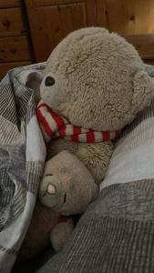“Paddy are”
Yes we are thinking about breakfast. In fairness you haven’t spent much time here in the last week and nor has Seb.
Paddy is asking about Bertie ( as well as his breakfast).
The new bedding is lovely.
Bertie has had his breakfast
I suppose we had better get up…
Really struggling with wordle…
Can’t think of any words for my third go..
Me and Bertie got it in four
We got there…. Just…
Wordle 288 6/6*
⬜⬜🟨⬜⬜
🟨⬜⬜🟩⬜
⬜⬜🟨🟩🟩
⬜🟩🟨🟩🟩
🟩🟩⬜🟩🟩
🟩🟩🟩🟩🟩
Wordle 288 4/6*
🟨⬜⬜🟩⬜
⬜⬜⬜🟩🟩
⬜⬜🟩🟩🟩
🟩🟩🟩🟩🟩
What was your fifth word?
Fever
I am just about to go out for a cycle ride.,. So won’t be contactable.
Hope you are ok…
Will send the Strava text. Xx
OK
How are the goats?
They have new friends… look at these…
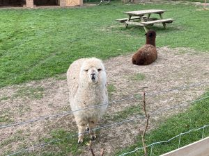I am quite excited…
Time to go ….
I am home. Will have a shower, then some lunch and then will drive in with your stuff. Is that ok?
Fine. Let me know when you are leaving and again when you are outside the ward
Do you need a towel?
No
Just leaving home now
If you can get a cold bottle of dirt Coke as you go through reception that would be fantastic
Diet!
OK..
Parked up… walking in.
Ok
Just heading to the lifts with Diet Coke
Ok
I am here
Give it 10 seconds and go in
The kit kat and Coke were excellent. I feel quite content with life!
Good I am pleased. And great to see you. Love you
Love you too
I will go home to cheese and pineapple
😀
Excellent… are we still chatting at 7.00?
Yes
Just spoken to your Mum.
She is off to Vienna from LHR on 1st September and wants to stay with us before she goes.
Back 6th
She will need insurance and passport application sorting out. I said we would help when we are next down.
Something to look forward to.
Ayla is out of seclusion.
Xx
Good good
Night night. Love you!
Night nightxxxxxxx
4th April 2022
Good morning
Morning- how are you?
No change really. I did sleep solidly for about six hours last night. I was cold and had to close the window and get into my hoody but then slept from 12:00 until the lights came on at 6:00
Wordle in 6
£100 on the premium bonds
Excellent.
I am pleased you slept better. That does imply you are coughing less.
Not looked at Wordle or Premium Bonds yet! Xx
£25 for me
Yes I suppose it does imply I am coughing less. Not thought of that.
Or tortoise
Poor
Wordle 289 5/6*
⬜🟩⬜🟨⬜
🟩🟩🟩⬜⬜
🟩🟩🟩⬜⬜
🟩🟩🟩⬜🟩
🟩🟩🟩🟩🟩
Took a lot of attempts considering I had the first three letters after two goes.
Wordle 289 6/6*
⬜🟨⬜⬜🟨
🟩🟩🟩⬜⬜
🟩🟩🟩⬜⬜
🟩🟩🟩⬜⬜
🟩🟩🟩⬜🟩
🟩🟩🟩🟩🟩
I had Sharp and Shady before Shall
Shady shams shack shall
No milk in the hospital so no tea and I can't have my rice crispies. You can see why people get grumpy in here
Oh dear.
Any other developments?
They have run out of marmalade as well
Not quite such an issue for you.
Indeed
A parcel has just arrived for you. I assume it is the monocle
Hello. How are you now? I am at a class at 11:35 until 12:20. I am thinking you have either been asleep, or something else is happening.
Leave a message when you can, or phone.
Love you xxx
I have just been for another chest x-ray
Okxx
The chest x-ray woman said something like"I assume you have had a CT scan." I said I hadn't. She went to see the CT scan people and they said that something had been put on my notes saying that a CT scan was no longer needed.
The CT scan woman did not seem 100% sure about this but went back, spent about 10 minutes talking to colleagues and came back to confirm they are not doing it
Just this minute been told by nurse on ward that I do need it and will be going down shortly!!
All good fun!
Everything seems to be under control
You are welcome to open it to check
OK xx
Are you still about?
Indeed I am
Hello. I am now going to go for a swim… but only for about half an hour. X
I've just been told that visiting is still not allowed by the nurse who told us to go outside the ward yesterday. I think she is in charge. Have you heard anything?
I don't think you are going to be allowed in even if you have not been notified.
OK That’s a Shame. She knows I had provisionally booked a visit?
Yes. She said she will turn a blind eye if we want to stand outside the ward again but I don't know if a video call is just as good
Standing outside the ward means you can have sandals, Diet Coke and a Kit Kat…
I can cope without all three. It was a nice treat but it's up to you
No, it’s entirely up to you. X
Shall we skip today and come in tomorrow instead?
Yes, sounds like a plan. And what time shall we have a video chat?
7?
I am at the Waterwitch then…
Any time is fine for me. I don't have too much else lined up
OK. what time is your evening meal?
It's s sandwich. It doesn't matter
Let’s say 5pm, then. Will the scan be today, or do you have no idea
No idea. About an hour or so ago the same nurse was surprised I had not been back yet.
If the scan is at 5 so be it
I know, if you have not gone in an hour, we will have a chat then. And if you have gone, then at 5.00
Is that a plan?
Ok
Are you there?
Yes
Hello. How are you doing? I am parked up at The Waterwitch waiting for Aleks.
Fine. Same as I was three hours ago! Waiting eagerly on my tuna sandwich
Fair enough. Poor you. Xx
Night night. Love you!
Just got in. Chicken Pie for me.
Night night, love you too. Xxx
Xxx
How was the pink chocolate mousse?
Nice but not very chocolaty
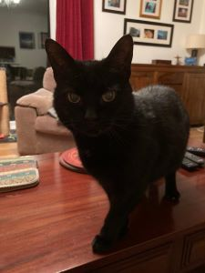Night night
Night night, Sid
5th April 2022
Good Morning. How are you?
Same. Did not sleep to badly
Wordle in six
CT scan at 9:30
That sounds a tad more organised. Good.
Remember to ask about when you will be told the results. Xx
CT scan completed. Results should be with doctor by the end of the day. No idea when I get to hear anything.
OK. How long does the scan take? Obviously not too long as you were back by 10am.
It's quite a machine!
There's a Super 6 tonight.
Ooh thanks… I will tell Lee
Wordle 290 4/6*
⬜⬜⬜🟩🟨
⬜⬜🟩🟩🟩
⬜🟩🟩🟩🟩
🟩🟩🟩🟩🟩
Wordle 290 6/6*
⬜🟩🟩⬜⬜
⬜🟩🟩⬜⬜
⬜🟩🟩⬜⬜
⬜🟩🟩⬜⬜
⬜🟩🟩🟩🟩
🟩🟩🟩🟩🟩
I was somewhat more fortunate than you with my second guess…
So Wordle done, super6 done and checked Steve got us tickets for the Hungary game.
Sandals and Fitbit charger by the front door.
No clothes or biscuits or anything?
No I'm fine with the chocolate brownies thanks
What time is it best for me to come in?
I suppose another clean t-shirt would be a good idea.
Any time really
When do you want to come in
I don’t mind, I thought a quieter time may be better…
Shall I aim for 4:30?
Or later?
That's fine
Okey dokey
Just spoken to consultant and they still don't really know what is going on. I am not responding to the antibiotics so my infection levels are not going down. They are going to stop the antibiotics
Another tremendous development. Because I am still infectious and as mentioned earlier could have something like TB, I have to wear a mask on the ward. They are however trying to find a "side room" where I will be on my own. Deep joy
Oh I am sorry.
It's not that bad actually and doesn't make your glasses fig up. Still going to get pissed of with it. A single room would be good.
Just at the main entrance.
Ok let me know when you are outside ward and I will come out. Could get stopped!
Now
Just called your Mum to let her know.
Are you there?
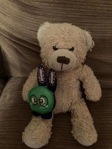Already out the play offs as Oxford have scored….
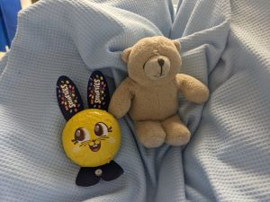Aah…..lucky Bertie
8th now - Wycombe winning
Oh dear
That's not Lee's is it?
Paddy decided to join in! Sid has now arrived as I boiler the kettle….
That's better from Oxford
Indeed
Ooh
Lee is excited
We have just seen the goal.
Was it good?
Good strike, but bounced off a defender in the penalty area and fell very kindly for him.
Are you ok?
I was asleep when we scored!
I thought you may be. Are you having to sleep in the mask?
Yes. It's not a problem
..... as proved by the fact that I was asleep when we scored
🤣
Good cat
Night night. Love you!
Finished.., another good result…
Night night, and I love you too xx
6th April 2022
Hello. How did you sleep? X
Intermittently but did get quite a few good hours. Completely fast asleep at 6:30 and got woken up for a COVID test ffs.
Have you been having them regularly?
I think that is the third since I came on here. It may be more
They are not usually at 6;30 in the morning
Oh, ok.
I was thinking in the night when I couldn’t sleep… will you try and ask the doctor why you are still having blood thinning injections if there is no blood clot? It could be that someone has not updated your records correctly. Just a thought.
Ok
Thanks.
Tree man is running late. Will be there within half an hour
OK, thanks
Has he been?
Have you done Wordle?
Yes
Wordle 291 4/6*
🟩⬜⬜🟨⬜
🟩⬜🟨⬜⬜
🟩🟨⬜🟨⬜
🟩🟩🟩🟩🟩
Wordle 291 4/6*
⬜🟨⬜⬜⬜
⬜⬜⬜🟨⬜
🟩⬜🟨🟩⬜
🟩🟩🟩🟩🟩
Nightmare… I couldn’t think for ages of any words starting in c and ending in a. Without an r or t or another c but with an o.
Comma?
Anything happening at your end?
I am just off to the gym.
Just had a load of blood extracted from me.
Indeed
Did they say anything or just take the blood?
The person who takes the blood does not know anything. She just has a list of people to get blood from.
Well, I suppose they are doing something. Xx
Speak later??
Ok
The chaplain has just been to say hello. I think I am the only one on the ward capable of having a conversation with him so he was getting a bit desperate!
Marvellous…. Xx
How are you getting on? I missed a call from your Mum during Pilates, and called her afterwards. However you had talked to her as well.
What time for a video call? X
7 again? Absolutely nothing has happened since I had my blood taken.
Yes that’s fine. How are you feeling on yourself?
In not on
Again, I feel fine. Not on?
I typed “How are you feeling on yourself? “
Fine. I can not get into my Super 6 app. Causing me a lot of stress
Lee says he has just done his predictions for Saturday. 😊
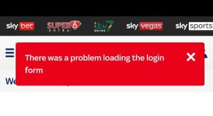You got 8 points yesterday, Lee 6, me 9….
Not sure I can help with that. Are you using data or is there Wi-Fi (could gambling be blocked?).
Good idea
Clever tortoise!!!!!!
🤗🤗
That big computer board has my departure date showing as April 9 th. That may be when a bed in the respiratory ward is available.
👍
Missed video call
Night night. Love you!
Nighty night…. Xxx
7th April 2022
Good Morning. How are you? Xx
Done wordle yet?
Doing it now. Finding it a bit tricky
I found it a bit tricky just got there…
And I really am feeling fine. I have been disconnected from everything and have been walking about again.
Oh good I am pleased. Won’t send wordle to you yet then….
Wordle 291 4/6*
⬜🟨⬜⬜⬜
⬜⬜⬜🟨⬜
🟩⬜🟨🟩⬜
🟩🟩🟩🟩🟩
I think the place we park in Oxford is Littlemore. We have parked on Cowley Road round the corner from The George Inn.
Thanks, will have a look later.
Wordle 292 5/6*
⬜⬜⬜🟩⬜
⬜🟨🟨🟩⬜
⬜🟩⬜🟩🟨
⬜🟩🟩🟩🟩
🟩🟩🟩🟩🟩
You did better than me…
Just got home. How are you doing? Any activity? Xx
I'm fine. Had more blood taken and had my old cannula taken out and a new one put in my right arm. (The thing everything goes in and out of)
Any idea what this blood is for?
Currently having my second dose of antibiotics. It takes 90 minutes
Oh…ok…
They said something about special tests this morning but no idea what. I don't know if that means testing for TB or something. She also said they were being rushed through, I assume so the results are available for the meeting
Well, at least there is some activity…..
Yes. Certainly plenty of activity in the last 24 hours!
Do you know which antibiotic they are now using?
co trimoxazole
Co-trimoxazole is used to treat certain bacterial infections, such as pneumonia (a lung infection), bronchitis (infection of the tubes leading to the lungs), and infections of the urinary tract, ears, and intestines. It also is used to treat 'travelers' diarrhea.
Seems like a reasonable choice
I know. I can use Google too!
But you didn’t tell me anything so I had to do it myself 😊
Have you spoken to your Mum today?
No. Not really got any news yet.
Yes. That’s what I thought. I am off down to the library in 10 mins. Xx
Good luck!
I am back… how are you?
Same. Afternoon nap time. This place really is cold when there is a strong wind. There is a small gap at the top of the window and the wind really forces the cold air through it. And that's not another fever, everyone is complaining.
I have just spoken to my mum
Okey dokey…xx
Eating lunch, then will give you a ring
Okay
New bloke opposite me complete wanker. Younger than me and had not got into bed yet. Moaning and winging that no-one will take out for a fag
Oh dear…
Your Mum is not in, but I left a message on the answering machine.
Ok. The doctor asked me if we had pets. I could be allergic to Sid
Sid…. Surely not… the coughing was bad in Bonaire.
Sid says where will you live if you can’t live here with him.
Thanks Sid
I am home and ready whenever you are.
You ok?
Fine just eaten
She is going to see if she can find a spoon.....,. but has actually gone to sort out anther patient so will probably forget again
Over an hour now….
👍👍👍
Perhaps you should hide it… so the same thing can’t happen again🤣
I have done.
The bloke opposite is still fully dressed including coat, boots and baseball hat. He has his hospital gown over this lot. I'm sat in pyjama trousers and the temperature is fine.
Does he have mental health problems?
I don't think that is beyond the realms of possibility.
He just came and stood by my bed to look out of my window. I told him that this is an infection bay and it was likely that I was the one that is infected. Told him probably not a good idea to come near my bed again. He's gone back to his own bed
Well done….
Hi. Has he calmed down?
I am off to bed - completely knackered.
Night, night… love you lots. Xx
He is still dressed the same way and keeps wandering around. I will be hiding my phone away tonight. He is very weird
Night night. Love you too!
Night night. Xx
8th April 2022
Good Morning. How are you? Xx
I am in a cycling class at 7am, but let me know how you are once you are awake please. Thanks xxx
I'm awake
How are you?
Fevers
Same! Didn't sleep that well. The bloke opposite (Gary) was hurling his hospital telephone thing around as it didn't work (you need a credit card and I don't think he has one
Oh dear. Coughing a lot. Have you complained? Or do the nurses all know?
I had a fever last night again but no effects
How do you mean no effects?
I just had a high temperature. I was fine
Wordle in 6
5
Still got the fever
Are you there, can I call?
How are you now? Xx
Fine if a bit sweaty
Ok. I am home and about to have breakfast before heading off. X
Ok
Off into Sainsburys now. How you doing?
I read that a fever means your body is fighting an infection! X
I'm still ok. That sounds good
Hello. I will leave in about 10mins to come into Basingstoke. X
OK
The doctor has just started doing her rounds
She has been now
I am outside D1
Are you there?
Missed video call
Sorry did I call you somehow?
Yes
Don’t know how. Was just talking to your Mum.
I was half asleep and my phone was on my bag
Sorry. Xxx
Don't worry
What did my mum have to say?
Night night. Love you
Night night. Xxxx
9th April 2022
Good Morning. How are you? xx
Fine, about the same as usual
Any fever last night?
Temperature was 37.7 but the nurse did not seem bothered. 36. Something this morning
We met Air last night with Kevin. She is finding Kingsclere VERY cold. They went shopping for a coat yesterday!
Gary has spent about half an hour playing with the incontinence pass this morning. They are all folded in half. He opens up each one, has a good look at it until he finds one he likes which gets put on his bed
Pads
Not a lot you can say about that…..
Apart from the cold does she like everything else?
Wordle time
Yes, she seemed quite happy. Xx
Wordle in 3
Wordle 294 3/6*
⬜⬜⬜🟨🟨
🟨🟨🟩⬜🟨
🟩🟩🟩🟩🟩
Easy one today
Wordle 294 3/6*
🟨🟨🟨⬜🟨
🟩🟩🟩🟨⬜
🟩🟩🟩🟩🟩
Are you happy for me to give your phone number to a random person on the smb. A few people looking for tickets
Yes
Just having toast, can I call you after that?
Yes
Phlegm clearance link from ScotlandNHS
https://www.nhstaysidecdn.scot.nhs.uk/NHSTaysideWeb/idcplg?IdcService=GET_SECURE_FILE&dDocName=PROD_334401&Rendition=web&RevisionSelectionMethod=LatestReleased&noSaveAs=1
I have given Eddie your number
https://www.uhcw.nhs.uk/download/clientfiles/files/Patient%20Information%20Leaflets/Clinical%20Support%20Services/Physiotherapy/Physiotherapy%20Advice%20Sheet%20for%20Deep%20Breathing%20Exercises.pdf
That’s fine. Have you said I won’t be contactable between about 11.00 and 12:30….
The latter message is for Eddie
Just spoken to Pete.
I will let him know.
Pete is Eddie.
Meeting him outside the away end.
How will I know about your antibiotics now Regan won’t be there with his bendy knees? 😀
Did you contact the tree man (Nash).?
Yes not g heard back yet
Good bears
Gary had a carer with him the last time he was in hospital. The nurse who told me that was not very happy that he does not have one this time.
The carer probably wants a break..,😉
Hi. We have just parked on Cowley Road. Are you free for a chat. Xx
Yes
Hi. Ticket sold. Xx
Good. I have managed to get soccer Saturday on my phone
Good..I wondered about that last weekend…. but decided not to suggest it.
I am in my seat. Was going to buy a hot drink… but the queues are horrendous (same queue as the beer… not because everyone wants a coffee!).
Swansea are on hesgoal as well so will try and get that working
All going well so far!
Not going quite so well now. Have you managed to watch your game?
Yes got a pretty good stream on hesgoal
Good. Did you see Everton won against Man Yoo
We were tearing them apart until they got one back. Derby looked quite good since then
They needed those points
We looked good until we scored, then just started defending deeper and deeper… and their goal was inevitable.
The incontinence pad trolley has been removed
🤣🤣
But what will he play with now
Easy!
Silly Lee
I thought he did them. We are home…
He did do them… but there were no home wins in the 6 games!
Poor Lee
Are you there?
Yes
We are still quizzing but Night night. Xx
10th April 2022
Good Morning
How did you sleep? Xx
Are you there? Xx
Yes. Did not sleep well. I seem to get a fever every night so they give me paracetamol which makes me sweat a lot. At about 6 I moved to my chair as the sheets were damp. Not as bad as some nights! Temp back to normal this morning
Sid says good morning x
Good morning Sid!
They got breakfast 100% right!
👍👍
Louise’s Dad fell at about 2pm he thinks. Neighbours heard him at 8:30 ish and called an ambulance before 9:00. Ambulance arrived at 11:30.
Paramedics don’t think anything is broken, but think internal organs need checking.
No one could go with him in the ambulance.
Louise now needs to try and locate him in the hospital.
That doesn't sound too good
Struggled with wordle this morning. Got it in five.
Indeed not. No visitors allowed in the hospital so she is not going until she knows what is going on.
Five for me as well
Wordle 295 5/6*
🟨⬜⬜🟨⬜
⬜🟨🟩⬜⬜
⬜🟩🟩🟩🟩
⬜🟩🟩🟩🟩
🟩🟩🟩🟩🟩
Wordle 295 5/6*
⬜🟨⬜⬜⬜
🟨⬜🟩⬜⬜
⬜🟩🟩🟩🟩
⬜🟩🟩🟩🟩
🟩🟩🟩🟩🟩
Very similar
My third and fourth guesses was Plack, and then flack.
I had plack and clack
Just spoken to my mum
How is she?
Fine
Hello Bertie
Hello Bertie
Bertie says "silly cuddles"
Yes indeed…xx
Aer has tested positive for Covid!
Oh dear. Are the rest of you still going out?
Yes
Have fun!
Hello. Now in Louise’s having a cup of tea…
How are you??xx
Watching the football. Good game so far
Enjoy…
I am home and saw the last half hour of the game. Shall we video chat soon? Xx
Night night love you!
Night, night…. I love you too. Xx
11th April 2022
Wordle in 4. Took me ages.
Good Morning. How are you? Xx
Surprisingly good. I was feeling a bit crap yesterday evening
I am a bit stuck on wordle. After two attempts I have the last two letters and can’t think of any more words.
No news, I assume
Got there, took ages
Wordle 296 4/6*
⬜⬜⬜🟩⬜
⬜⬜⬜🟩🟩
🟩⬜⬜🟩🟩
🟩🟩🟩🟩🟩
No news which ol
I think is bad news
Yes, so do I. How crap
Indeed. The NHS have been brilliant 90% of the time but then really let themselves down with something like this
Wordle 296 4/6*
⬜🟨⬜⬜🟨
🟩⬜🟨⬜⬜
🟩⬜🟨🟩⬜
🟩🟩🟩🟩🟩
Quite enjoyed that one. I like the harder ones where you have to think a bit more
If nothing has happened by 10:30, I think you should ask to speak to your respiratory consultant today.
On Thursday, they could only arrange an appointment for Monday. You may need to push for an appointment.
You also need so more information about the effectiveness of the antibiotics.
I think you have reason to ask for that.
I am nil by mouth at the moment so I think it will be this afternoon
OK. Are you hungry?
Not yet. My breakfast tray was heading towards me when someone speed nil by mouth and it disappeared again
I think I may be going now
Have you? I assumed you had…
Are you there
We will get through this, Roz. It's just going to take time.
👍
Microbiologist was the word I was looking for earlier. They are looking into alternative drugs
Things have just got worse. I am having to listen to Homes Under the Hammer
I am just so sorry, Dave
I have let your Mum know.
Please try and ask to speak to a doctor to find out what the options are when you are not responding to antibiotics.
I will try and call the ward this afternoon and ask for information.
It's not that bad. I am used to listening to it at home.
😀
https://www.nice.org.uk/news/article/simple-blood-test-for-pneumonia-can-help-limit-use-of-antibiotics
Just seen the consultant. Basically they can not do anything until Wednesday. She asked loads of questions mainly lifestyle. "Which countries have you been to in the last ten years?"
I think I am going to be moved into a"side room". She seemed very interested in the fact that this is something I could have picked up on some exotica location and has taken time to come through
She also mentioned final infection so basically they really don't know
Fungal
Already on paracetamol for high temp. Not a fever 37.7 but they are trying to get out down before it becomes a fever
Oh no….. rubbish day….
I don't really mind. If they get my temperature down now and I don't have to take paracetamol just before bed that would be ideal
Just spoken to my mum.
Had about 90 minutes sleep since lunch. The noisiest patient in here disappeared yesterday evening
Don't let Paddy anywhere near them!
Do I need to post Easter stuff to them?
I can't see us going down there before Easter but there is still plenty of time
Did I tell you the trees are being done 14 16 April. Not sure if that means all three days or just one of them
No, you never said. So that means Thursday. I have just booked a class at the gym.
What time?
Just parked.
Don't know and I don't know if anyone needs to be in
Hi. I am in the hospital if you want to get prepared.
I am prepared!
I am outside D1
The nurse who told us to party outside last week is on duty again today. She is by far the best of the nurses here. When I got back she said "you haven't sneaked out while i wasn't looking have you?" She was impressed with the contents of the bag!
Are you there?
https://www.rightmove.co.uk/properties/122168816#/?channel=RES_BUY
That's a bit of a shock
Indeed. I was just browsing and looking at houses for sale in Kingsclere… and found it.
Are you thinking of moving?
No - we were talking about a house for sale on King John Road with Kevin on Friday and thought I would have a look at it.
Anyway, we are getting sleepy so will say night night. Love you.
Yes, night night. Love you too. Xx
12th April 2022
Good Morning. How are you?
Same.
I had 2 guesses when I spoke to you.
Wordle 297 4/6*
⬜⬜⬜🟩⬜
⬜🟨🟨🟩⬜
⬜🟩🟨🟩🟨
🟩🟩🟩🟩🟩
Wordle 297 3/6*
🟩🟨⬜⬜⬜
🟩🟩⬜🟩⬜
🟩🟩🟩🟩🟩
What was your second word?
Roman
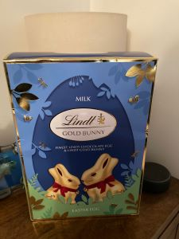Your mum sent two of these
They look like these out of the box.... although I swapped the bigger bunny from milk to dark
And the egg on the first one was broken. I don't think it is on "yours".
We are getting ready for Easter
It doesn't bother me too much whether it is broken or not to be honest
I have posted the stuff to your Mum and Ayla. I asked Raj for a box and I meant the PO ones you buy at the post office. However, he sent Hamish off to find a box for me. So they are in a box which previously held 12 packs of biscuits.
The way he told Hamish to go fund a box was just how Louise tells him to do stuff. 🤗
Excellent!
I had taken bubble wrap, sellotape and scissors with me.
Hopefully they will get there by Saturday… posted first class. X
Now..... he gets on me at the most inconvenient times
Now you know what I have to put up with.
A filling in May, a prescription for special toothpaste and a hygienist appointment in 45 minutes.
No messing about there
The dentist said I needed to see the hygienist and the offer was an appointment at 11:30 or September
Can you watch the BBC via your Sky Go? The snooker world championships start on Saturday…
Good news. Should be able watch it with iPlayer
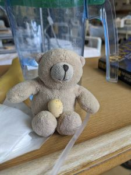We are getting ready for Easter as well
Bertie must be pleased with his giant egg..,
Indeed. How was the hygienist?
Fine. I need to floss daily…
Your Mun called me whilst I was at the hygienist… I have tried to call back 3 times but she is engaged.
Have you spoken to her?
I am off to the library in 10 mins so won’t be able to call her back. And I want to go swimming directly after the library.
Ok I will call her
Bertie says who's a librarian?
5 customers today, but with 3 volunteers, we coped!
We are about to move to a double room
The room is good in the isolation unit with plenty of space and en suite toilet and shower. The bad news is I'm not allowed to leave it
Hello. Just come out the shower after my swim.
Isolation unit… isn’t it a bit late?
Can I call you in 5 mins? X
Yes
Ooh yes. How is the beeping?
Just stopped it. There is a box at the end of the bed which seems to vibrate for ten seconds every ten minutes for no obvious reason. There is a button on it to turn the sound off
👍
Hhhmm
I think that was the driest piece of meat I have ever eaten. Managed half and it was a tiny portion.
I am home. Night night. I love you. Xx
Night night love you too
13th April 2022
Wordle in five
Good Morning. How are you?
The Chelsea game looks like it was quite exciting last night.
Wordle 298 4/6*
🟩🟩⬜⬜⬜
🟩🟩⬜⬜⬜
🟩🟩🟩⬜⬜
🟩🟩🟩🟩🟩
Wordle 298 5/6*
⬜⬜⬜⬜⬜
🟩🟩⬜⬜⬜
🟩🟩🟩⬜⬜
🟩🟩🟩⬜🟩
🟩🟩🟩🟩🟩
What was your second word? I went chirp, chuff and luckily chunk before chuck.
Chimp, chuff, chuck, chunk
Quite similar really…
I think I will go swimming this morning. So leaving home about 9:30.
Are you ok?
Fine. Still in room.
Any news?
Are you ok?
At 9:35 they told me I was booked in for 9:30 but they were running late. Two minutes later I was told they needed more blood samples as they are concerned about blood coagulation levels. I have been told I still can't drink anything but she did not really know what was going on.
FFS
Indeed
I am going for a swim xx
I have just had my first shower which was superb
Good
Just been told definitely before lunch. We will see. They have me on a drop to keep me hydrated at the moment as I can not drink water
Drip!
Ok
No updates I assume.
Is you blood to think or thin for the procedure?
The nurse here seemed to think it would go ahead. She said that because of the possibility of TB I had to go on last as the room will require a deep clean
That does make some sense.
She still thinks it will be before lunch which is why I am on the drip
I hope so🤞🤞🤞🤞🤞
Xx
Doctor been. He seems confident that stronger antibiotics will clear it so changing again.
What about the camera?
TB. He says the tests can only really tell if you have been in contact with someone with TB. All the tests so far are negative but some tests have to be sent away and can take many days for the results.
He said it is still happening
I am on my way down now
Are you back?
Are you ok?
Yes. Give me 30 mins. I'm fine
👍
No water since 7 and not allowed until two. Coughing a lot
Poor you. Did it hurt a lot? X
It was really uncomfortable for about twenty minutes. I was supposed to be sedated. The doctor did say it was a bit hot and miss but I don't reckon they gave me enough. I was totally awake through the whole thing
Seven hours within water now. I am so thirsty
Yes, I bet. Is there water there for 2pm… or will you need to ask?
I will drive home and you call me when you are able to drink.
Is that a plan?
I have just asked for water
I can drink in four minutes
Call me when you are home
I have just recieved this in the post
That's handy!
Indeed
Have you recieved anything in the shed?
Do you have a phone number for this chap who may be coming to do the trees tomorrow??
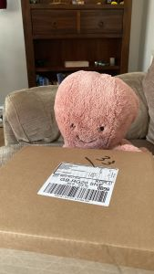Yes....nothing through the door to tell me
Can I open it? It is addressed to me… xx
Perhaps it should be saved until after the Easter bunny has been.
Thank you. I will do that. Xx
1. Have you spoken to your Mum.?
2. I was thinking of calling the tree man to find out when he was coming.
1 Yes
2 probably a good idea
Let me know when you are in
Not that difficult Meropenem
Meropenem, sold under the brand name Merrem among others, is an intravenous β-lactam antibiotic used to treat a variety of bacterial infections.[1] Some of these include meningitis, intra-abdominal infection, pneumonia, sepsis, and anthrax.[1]
Meropenem (Merrem) is considered one of the stronger antibiotics. It works against many types of bacteria and treats severe or complicated infections when other antibiotics may not be enough.
Chicken sandwich was crap but the raspberry mousse was superb.
Temperature back down to normal. It was 39. The nurse told me that was the highest temperature he had ever seen
It’s not big and it’s not clever.
But pleased you are feeling better.
Night night. Love you. Xx
14th April 2022
Morning … are you about? X
Indeed I am
It's good in here. They just asked me what I wanted for breakfast so I had two boxes of rice crispies
👍😀
You did say you had done wordle didn’t you?
In six
A long pause between guesses 3and4
Wordle 299 4/6*
🟨⬜🟨⬜⬜
⬜🟨🟨⬜⬜
⬜🟨⬜🟨🟩
🟩🟩🟩🟩🟩
Wordle 299 6/6*
⬜⬜⬜🟨⬜
⬜⬜⬜🟨🟩
⬜⬜🟩🟩🟩
⬜⬜🟩🟩🟩
⬜🟩🟩🟩🟩
🟩🟩🟩🟩🟩
They have started
Good
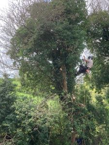How many of them are there?
At least 4
Me and Bertie could not get into our orange so we threw it away and had mini eggs instead
Good plan…
Did you call?
Are they all working on the same tree?
Sid doesn’t like the noise.
I think the top may be coming down soon
A bit of a discussion going on now
The difference already
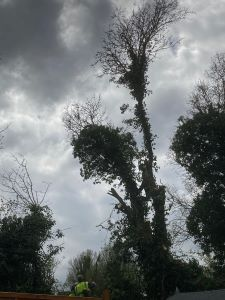Am I doing well with photos?
Indeed you are
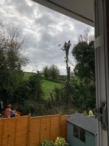Quite a few logs
The new view from your office
They are now having lunch and coffee from me.
Expect to do half of the other two trees, and then back at 9am tomorrow.
Only the coffee courtesy of me.. not lunch.
What do you think? The difference in the lounge already is remarkable
You ok?
Yes I'm fine. A bit sleepy again
Do you want me to shut up? 🤔
No
🤗
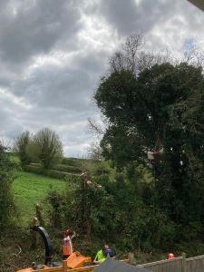Off again
Can you bring in a couple of pens and some sort of note pad. Things are getting more complicated and it might be useful to write things down
I certainly agree
Also don't bring in diet Coke. I have just been told that my salt levels are low and I have to restrict my liquid intake to 1.5l a day☹️
Oh. So what are they doing about that?
Is low salt a problem????
Apparently of I dehydrate myself for a bit they come back to normal
Oh….
It looks like they are packing up
Do you think it is normal to leave all the wood chip which the machine breaking up the smaller branches has created
What do you expect for £1000
Ok but is it a problem?
No
Got my fever already so about to go onto paracetamol
Oh…
Come to floor E and head for the isolation ward. Ring the bell. Apparently we should be able to wave to each other
Ok xx
I am in the hospital and about to head upstairs.
Definitely no Diet Coke?
Sadly not
Good to see you… albeit briefly…..
Indeed. The nurses here are ever so good
Right, time to cycle home via the goats…..
Looks like The Mole is reopening as a pub......
I am home when do you want to video chat?
Whenever you want
Left my clothes on the bed when I went out on my bike.... now look.....
Night night. Love you
Night night… hope you sleep. Xxxx
15th April 2022
Good Morning xx
My View
Slightly better in that direction
Agreed… the second one is better. Don’t think directly below your window is an area I am allowed to go to.
...... or would want to go to!
Are you there?
 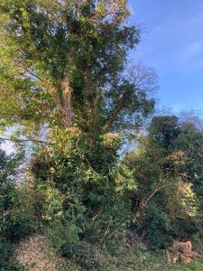
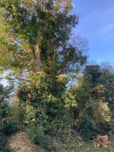
No sign of the tree people yet.
They have now arrived
Good
7 of them
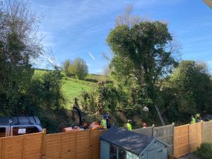That seems an incredible amount of people who can't be earning that much money
Indeed….
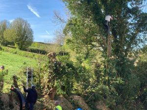They have started
Wordle 300 4/6*
⬜🟩🟨🟨⬜
🟩🟩🟩⬜🟩
🟩🟩🟩⬜🟩
🟩🟩🟩🟩🟩
Wordle 300 4/6*
⬜🟨⬜🟨🟨
🟩⬜🟨🟨⬜
🟩⬜🟩⬜🟩
🟩🟩🟩🟩🟩
Happening quickly now
Indeed
Wordle. I had shape and share first
Speak and scale
Looks like he is standing on houses.....
The hospital seems to have run out of pyjamas. Apparently they get sent away to be washed and will be back in a couple of weeks
Got to wear a gown now
Shorts and T-shirt??
That looks excellent
I'll cope with the gown
So quick… the trees.. not the gown…
Excellent. That looks so much better
League one play offs… Thursday 5th, Fri 6th, Sunday 8th (at 6:30pm!) and Monday 9th.
Indeed it does.
You were right. I have changed into shorts
More comfortable for you and I can keep bringing in t-shirts and shorts. Washing doesn’t matter as I have to was my gym shorts with very little else.
Wash NOT was
Last of the debris from Baldings field just coming over and then I reckon they are done.
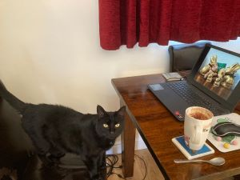Sid says hello
Hello Sid.i like your computer wallpaper
It was luck as it goes through all the cuddles pictures taken through lockdown.
Julie must have sent that message to you. I don't have it
Julie sent it to Swansea tickets yesterday
Yes seen it now
👍
When did we get a shadow like that from the shed??
Are you there?
Yes
Have you got Soccer Friday on? We just scored… and they can show the goals
2…!!!
Are you watching sky or is your game on n hes goals
Watching sky
Ggrr re S’land, 👠for Swans
Bigger GGrrrrr
We're losing. Oh dear
Oh sorry , I thought you were winning
Have you seen the Shrewsbury 2nd goal scorer ??
Indeed. Are you at Kevin's yet?
Yes
Happy tortoise!!!!
Indeed…
You ok?
Yes. How are you
Missed video call
Night night .., I love you. Xx
16th April 2022
Good morning x
I had a bit of a head start…
Wordle 301 3/6*
🟩🟩🟩⬜⬜
🟩🟩🟩⬜🟩
🟩🟩🟩🟩🟩
Wordle 301 5/6*
⬜⬜⬜🟩⬜
⬜⬜⬜🟩⬜
⬜⬜⬜🟩⬜
🟩⬜⬜🟩⬜
🟩🟩🟩🟩🟩
You didn’t have a lot of letters for quite a while!
I know. I was running out of letters to use
Lee says there was Super6 yesterday and he thinks you among others may have forgotten....
Lee says there is another one today.
Thanks, Lee
Lee had a very good day yesterday
He says he is a very clever bear…
Bertie says he is more clever than Lee
Is he indeed? How did he do in the Super6?
He says he does the Super 7
Elsie reckons it is ridiculous that I should have to stay in bed so I am now allowed to get up and go to the toilet again
Hi. I am about to get the lawn mower out. Xx
You will need the extension lead from the cupboard under the stairs
This?
Before

Started
I have sorted out the knots in the cable… don’t worry…
Looking good
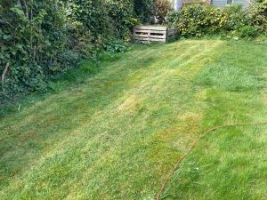Starting to resemble the Wembley turf I feel ..... 🤗
Indeed
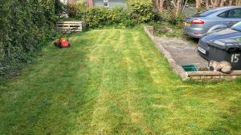I think this may be it....
Do I now need to trim the edges or something?
They still need doing but leave them. The strimmer is crap, not very safe and needs fixing every few minutes
Ok … are you impressed?
I am
Does the hedge need a trim?
Absolutely not….
😀
Are you able to watch the football?
Yes
Just called your Mum. Do you think you should organise a video chat for the 4 of us tomorrow as it’s Easter Sunday? Jane is going round there for lunch.
It's on the BBC website
Ok
A chat with your Mum???? 🤗🤗🤗
Yes
Deary deary me…
I'm about two minutes behind you. Did not know what you were on about
Aah.. hadn’t thought about that… but I didn’t really tell you anything.
Quite a first half that was!
Good game!
You ok? X
Fine. Going to read until my next lot of antibiotics
OK. x
Night night. Good luck in the quiz! Love you.
Night night, love you. xx
17th April
Good Morning. Happy Easter… not a great one, I know.
Lee says he is looking after your Easter presents for you. Xxx
Sid says he has a lot to tell you
Better Lee than Paddy
That’s what we thought!
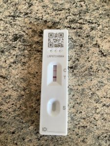I was getting stuff ready to bring you in... and now this has happened...
I've told Dave you won't be meeting him tomorrow
Thanks.
Hi. Just looking at the current guidance for people who feel or unwell or you have tested positive….
“Take any exercise outdoors in places where you will not have close contact with other people”.
I don’t have a temperature.
I am going to go out on my bike after chatting to you, your Mum and sister at 1:45pm.
Are you staying the call?
Starting
Can do.
You ok? Just about to go out on my bike. Xx
Fine just been talking to the (junior) doctor
Deer
Oh
I am home and watching the football.
Okay
Finally…. Got stuck before the video chat with your Mum, and couldn’t think of any words.
Wordle 302 4/6*
⬜⬜🟨🟨⬜
⬜🟨🟨🟨⬜
🟨🟨🟨🟨⬜
🟩🟩🟩🟩🟩
Wordle 302 4/6*
⬜🟨⬜🟨⬜
🟨🟨🟨⬜⬜
🟩⬜🟩🟩🟩
🟩🟩🟩🟩🟩
When do you want to chat?
Now?
How are you. Half way through “Ghost”…
Night night. I love you. Xx
Was asleep. Waiting for my antibiotics now. Night night. Love you too
18th April
Good morning. Xx
Good morning
Wordle in five
Wordle 303 4/6*
⬜⬜⬜🟨⬜
🟨🟨⬜🟩⬜
⬜🟨🟩🟩⬜
🟩🟩🟩🟩🟩
Wordle 303 5/6*
🟨🟨⬜⬜⬜
⬜🟨🟩⬜⬜
⬜⬜🟩🟨⬜
⬜⬜🟩🟩🟩
🟩🟩🟩🟩🟩
Still positive but the line looks fainter than yesterday's
Looks s lot fainter
Yes indeed. It took longer to appear as well. X
Good news
Yes.
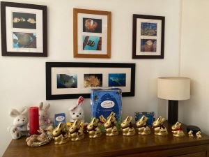We could be eating bunnies for a long time!
Can't have too many bunnies
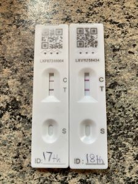Now it's "dried" doesn't actually look that much fainter than yesterday's!
Hi. I am home again. Xx
Who is that doing soccer Saturday
No idea!
How was that not a penalty?
Appears to be all go in your game!
The Ross Stewart one - no idea
That was good
I took this while out on my bike. We should have asked Brian Nash for something similar
Night night. I love you xx
Night night. Love you too
19th April
Good Morning. X
After 5 mins
Good news
Can I have my bunny more?
Now
Just tried to call you.
Wordle 304 X/6*
🟨⬜⬜🟩⬜
⬜⬜⬜🟩🟩
⬜🟩⬜🟩🟩
⬜🟩⬜🟩🟩
⬜🟩⬜🟩🟩
⬜🟩⬜🟩🟩
Oh dear
Wordle 304 5/6*
⬜⬜🟨⬜⬜
🟨⬜⬜🟩⬜
⬜⬜🟨🟩⬜
🟩⬜🟩🟩🟩
🟩🟩🟩🟩🟩
There is a very faint line there
That's still a lot better than the previous two. Should be clear tomorrow
My questions… don’t ask them if you don’t want to…
Queries for Consultant
1. Infection continues to drop? How low does it need to get?
2. How do we ensure it goes completely?
3. I have read about hard to clear mucus which requires nebulisers / breathing exercises / physio. Do I need this?
If the mucus remains can this cause a re infection?
4. Is it possible that the infection was fungal?
5. What about all the other tests from my bronchoscopy?
6. What about the irregularities found on my X-rays / scan? Is this something to worry about?
7. Could there be an underlying cause to my infection considering I had one in early Feb. and have been coughing for well over 4 months.
OK
Just had Nina on the phone for half an hour…. she sends her best wishes.
Hi. Off out on my bike. I am going to cycle into Newbury, and back. Xx
1 he did give me the numbers and we are nearly there.
2 once the numbers are low enough they are happy it is gone
3 again, he did not seem interested. As I am active and can move around he did not think it was necessary. Seems to be more for people who are immobile.
4 yes
5 sometime this week
6 still looking into those
7 they have no real idea
Hi Tried to call you
Call me when you can. I will stop and call you back. X
He was not a respiratory doctor, I should see one of those in the next couple of days
Just had my chest x-ray
Good. Let’s hope it looks better with less infection. Still out on my bike. Stopped to answer a call from the gym re my DD.
Will call you once I am back home.
Nebuliser?
Indeed
Are they putting any medicine in it? Or is it simply to try and breakdown mucus?
Not that I am aware of
I think they consider that my mucus is a bit thick. How are the silly ones?
Paddy says Bertie has been told it’s a bit thick as well. Bertie is a bit confused as to exactly what is thick. 🤔
The doctor has not been back then?
No
Still on the nebuliser?
No. It's only on for about 10 mins..... although I had it for about 25 mins as no-one came to take it off
Hi. When do you want a video chat?
I'm having my tea. I'll call when finished
👍
The football is on Sky
Has something just arrived from Amazon?
Is it from your Mum or sister?
Can you just put it in my office
Yes.., what is it?
Just put it in my office!
I have done. I thought it may be a gift card from your Mum so was going to hide it for your birthday.
It isn't
Forget about it!
Help. All 3 Alexia's appear to be on like this... since I dusted the one on your bedside table. Any ideas?
Say Alexa notifications
To any one of them
Fixed?
Ooh that’s worked - your shipment is due to arrive today… it has.
Thanks.
I must just have noticed it with the dusting!!
🤗🤗xxx
You can go back to the football now!
I have
🤣
Gary Neville seems a tad fed up!!
Yes don't know if you heard him call them a waste of space
Indeed!
Quite enjoyed that. Now time for bed. So night night. Love You. Xx
We are out the play offs again …
Night night love you too
20th April
Good Morning. Xx
Morning
It’s Wycombe v Sheff W on Saturday not next week.
Looking good
Indeed
Shall I come in with some stuff late afternoon? Xx
Dark chocolate bunny and diet Coke!
Any hint of a line on your COVID test?
Okey dokey…
None at all.
Good
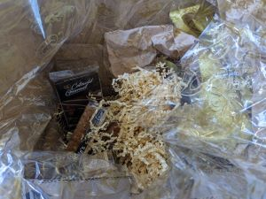I've had a hamper from my mum
Aah how sweet. What’s in it?
Grapes, apples, oranges, a blueberry muffin, a Kiki fruit, a jar of almonds.....,
These are the good bits
Wrong photo
I don't need any grapes this afternoon!
Hi Just tried to call you. Can you call me back please. Thanks

They look ok my way...
Clever tortoise
I have had my COVID test. He put the swab in my mouth and it came out all chocolatey.
Hi. What are your Englandfans details? I will register us for the game in Munich.
🤣🤣🤣🤣
55041279 I think
The swab then went up my nose
55041729
Hi. Did you log in? How many caps do you have?
I can’t find a way of checking what each of my 28 caps are for, so no way of checking if the last two games have been allocated to me correctly.
I am now in the car park of David Lloyd. Will do the registration for Germany later.
We also need to apply for World Cup tickets in the next week.
No sign of a doctor at all?
I have 30 but also can not find where you check.
No doctor yet
You should be two more than me. So we are both in the same position.
Just seen doctor. Things still coming down which is good I think they are trying to get me out of here as soon as possible but both agreed that it is better to stay a few more days on intravenous antibiotics than to risk it coming back again.
No results from bronchoscopy yet
If you want to see which games you have been awarded caps for, log in and go to this address, changing my number for yours:
https://englandsupporters.thefa.com/members/55041729
Hi. Shall I come in for 5ish ?
5 ish will be fine
🤗
I had nodded off for a while then
No worries.
Did that work?
Haven’t tried yet.
Hi. Just tried it and it’s 32 caps! Although the other page I looked at earlier said 28.
So looks like we are getting somewhere.
Does it list the last two games
No… the list is obviously not updated.
Yes mine is the same
Just registered for Germany for us both.
Will finish my cup of coffee and then drive in
OK
Can you bring my mum's get well soon card. She keeps asking about it
It’s already in the bag. Do you want grapes?
No thanks
I am in the hospital. Just press the bell like last time?
Yes
I am there
Thanks!!!!
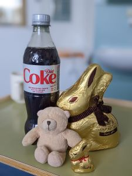Bertie says thank you too!
We thought Bertie would be pleased with a giant bunny
To ensure cold Coke - it’s actually from the decaffeinated version in the fridge at home rather than what it says on the label..
It's lovely and so is the bunny
Paddy says he thinks Bertie got a better deal than him.
He also says the muffin may be alright in an emergency.
Poor Paddy

Paddy says it's alright really!
Good knows what we do with the almonds but I assume you can use everything else
Happy Paddy
I will make a smoothie with the kiwi fruit and oranges (and grapes you didn’t want!).
👍
What time are we video chatting?
When would you like to video chat
7.00 or 6:30 ???
6:30
👍
The strap is broken so now I have to hold the mask
Oh dear!
Been busy… talking to your Mum, then Audrey, and then Louise. Nearly time for bed now. You ok? Xx
Fine
Waiting for my 22:00 antibiotics. Night night. Love you
Night night. Xx
21st April
Morning. How did you sleep? X
Hi. Dave
These are some questions….for a respiratory doctor. Don’t ask them if you are uncomfortable with any of them. They are my thoughts….
I love you.
1. How do we ensure the infection goes completely? Is there anything I should be doing once I am discharged?
2. Am I now susceptible to chest infections.
3. Will I get the pneumonia vaccination?
4. I know infections need rest. But I am aware I will need to start exercising once I am home. Is there any guidance or programmes or just what feels right for me.
5. Tell them the nebuliser seems to be working. (So it continues, particularly because some doctors didn’t think you needed it)
The following are the same questions as previously….
a.Is it possible that the infection was fungal?
b. What about all the other tests from my bronchoscopy?
c. What about the irregularities found on my X-rays / scan? Is this something to worry about?
d. Could there be an underlying cause to my infection considering I had one in early Feb. and have been coughing for well over 4 months.
I am off for a swim now. Xx
Love you. Xx
Give me a ring when you can
I have left a message on your Mum’s phone. Xx
I assume she is with Jane
Been on the nebuliser again
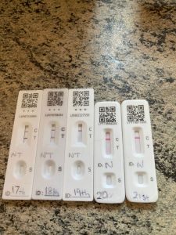Will stop doing daily tests now🤣
Some good news!!
Holiday Inn Express in Derby has to be cancelled by tomorrow. I have your account open. Are you happy for me to cancel it?
I think we are going to have to sadly
I hope you will be discharged by then. But we will need to visit your Mum / somewhere more relaxing than Derby/Nottm pubs. 🤔
I have also started a claim to N’wide travel insurance for the Wizz Air flights.
I agree
I usually end up very relaxed after the pubs of Nottingham and Derby!
Done
1. Once the infection markers are below a certain level they are happy that the infection has cleared up.
2. No
3. Didn't ask.
4. Exercise as much as I want but so if breathless
5. Both agree that nebuliser is working so will continue
Everything from bronchoscopy has come back negative which is good news
MDT = Multi Disciplinary Team
MDT meet once a week. Need for them to meet and discuss my case before I can come out. Doctor not sure when meeting is.
4. Stop if breathless
I am home again. Just one customer.
Did you enjoy it or are you going to find out too boring
The other volunteer today was lovely. We chatted for about half of the time…. And I had a book to read.
Shall we video chat at 6:30?
Ok
6;35
Ok. You call me. X
Hello. I have spoken to both your Mum and your sister.
Well,really it was your Mum speaking to me… but you know what I mean.
How are they both
All done early tonight antibiotics and nebuliser. Time for bed. Night night. Love you
Night night and love you too. Xx
22nd April
Good Morning. Xx
Good morning
How are you doing? Have you done wordle? Just done it myself. Having breakfast between swimming and Pilates.
Have you spoken to Jane?
Spoken to my mum and Jane
Wordle 307 2/6*
⬜🟨🟨⬜⬜
🟩🟩🟩🟩🟩
In 2…. I was pleased with mine…
Wordle 307 3/6*
⬜⬜⬜🟨🟩
⬜⬜🟩🟩🟩
🟩🟩🟩🟩🟩
It's my second 2 this week
This has arrived
Can you add it to my Amazon parcel on the office
Already done xx
Hi. I am just walking in to the hospital. Will message you when outside
OK
Here.
I know. I can see you
Thanks Roz. That is so nice with the chocolate bunny. Bertie says do jelly babies have lots of iron in them?
Cuddly iron
He says that will do!
I'll call you on about 10 mins
I think that was a bad move No internet on anything now.
What colour should the lights on the router be?
It takes a few minutes. If it still does not come back, unplug it and plug it in again
It has just come back. Alexa is happy again🤗
Good
Night, night Dave. Sleep tight. I love you. Xx
Night night. Love you too!
23rd April
Hello
Hi. How are you?
Just spoken to my mum. Have you spoken to Jane?
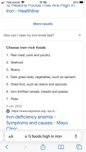 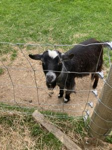 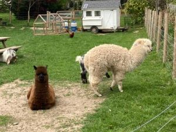Aar4r
You know what I mean!
We should be here on St George's Day xx
Indeed
From your mum
A few cards xx
Do you know what it is from your Mum? It is addressed just to you.
The cards are to both of us.
No idea
Have you done Super6?
Yes
Another Amazon package has just arrived for you as well.
No idea what that is so assume it is a birthday present 🎂🎂🎂
Hi. What are you watching?
Soccer Saturday. It's about two minutes behind flash scores.
Should win now!
How did we let them score… but looks like it’s 3-1 now. Just on my Soccer Saturday
Ie at least a minute after flash scores
Wouldn’t want to be late back in your seat in your game
Indeed. Fell asleep through most of second half! Good results for you.
It’s all so tight, though.
Have you seen a doctor today?
No
I wonder why…
Don't know. I'm quite surprised. Perhaps there is just nothing to tell me but I thought they came round anyway. It is Saturday. Probably not enough doctors.
What have you got prepared for St. George's night?
Two bottles of JHB, a pie, a can of Northern Monk and the English Spirit Company chocolate chilli vodka.
Sounds good! Jealous!
Shall I call you?
Ok
Missed video call
Hi. I could hear and see you. But you obviously couldn’t see or hear me.
I've sent Regan a message about Ayla as we will probably have talked about her before he joins and he does genuinely get quite upset when such things happen
And he might be playing cricket.
Forgot about that but he will know now anyway
Have you seen Hoggy’s Emerald Dragon cocktail? I can do one of those!!
Get on with it and get the picture up
I will before we join….
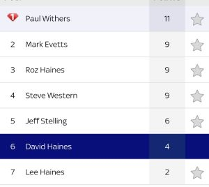Oh dear!
There is one on Tuesday featuring both Swansea and Sunderland
Lee says he will do his now. He thinks he will go for 2-1 wins for both teams. 🤗
Good bear
You ok?
Fine. Reading my booking until antibiotics, nebulisers, etc, etc at 22:00
Good lord. Send that to three sheets please!!
Done. Night night. Love you!
Love you too. Night night. Xx
24th April
Good Morning xx
Morning
Good night last night?
Yes, quite enjoyed it.
Good
If Rovers go up from fifth to fourth your predictions will be exactly right.
Good lord…
https://www.bbc.co.uk/sport/av/snooker/61195993
Excellent xx
Have you done wordle?
Yes
Has taken me since we stopped talking!
Wordle 309 4/6*
⬜⬜🟩⬜🟩
⬜⬜🟩⬜🟩
⬜🟨🟩⬜🟩
🟩🟩🟩🟩🟩
A couple of minutes for me:
Wordle 309 3/6*
🟨⬜🟨🟨⬜
🟨🟨🟨⬜🟨
🟩🟩🟩🟩🟩
I didn’t even know if it was a word although I had heard of inert gases.
Just spoken to Jane. She did not sound too bad
I just had your Mum on the phone for over half an hour. I didn’t really say a lot.
It keeps her happy!
I know.
I think they both worry about you despite everything they are going through
Louise just sent me her LFT - still very strong positive line.
I think you came out of all that pretty well
Very well
https://www.nhs.uk/conditions/pneumonia/treatment/
I think you have started to follow this path, which can only be good news.
Interesting reading one of those pages where it says you should not take Ibuprofen if you are allergic to aspirin. Can you remember I had a bad reaction to it and have never taken out since
Yes, I thought the same. So keep away from ibuprofen as well as aspirin.
If you take your first day being 12th or 13th April, then after one week your high temperature has gone, and they say 4 weeks from the start of antibiotics for mucus production to reduce… and you have said you have less mucus so that’s good too.
Indeed
Just been around to Louise’s for a doorstep chat.
How is she
Fed up and croaking. She has all the symptoms but none of them too bad.
I will come in with a chocolate bunny and Diet Coke between 3:30 and 4:00.. if that is ok?
Quite keen to watch L’pool v Everton at 4:30.
Ideal. Thanks.
Do you want anything else?
Are you ok? You never replied.
Shower gel. Either a couple of small bottles from your collection or bring one from the bottom drawer of my bed side table. Thanks
Okey dokey
I was half way through typing the message when my mum rang
Oh
I think I am down to my last Morse book. Not sure how many there are left to go?
Hi. You still have The Remorseful Day, The Secret of Annexe 3, The Wench is Dead and The Riddle of the 3rd Mile. ???
Choice?
I am balanced on a chair waiting for you to say… 😊
May as well save the remorseful day till last
Any of the others
👍
I will be in the hospital in 5 mins will let you know when I get to E floor
Ok
I am outside your ward
Ok
I am home, that was so, so nice. I feel so happy that we were able to do that. Xx
It was excellent. A bit emotional when you left. It's been a bit of a weepy week!
No knife for my cheese and biscuits. Grrrrrrr.
I love you so much. Xx
That doesn't help the cheese and biscuits situation
Yes, I appreciate that… 😊
Have you seen this in Facebook?
In Loving Memory of
Bubble Butt
March 23, 1989 - April 23, 2022
Those we have loved shall never truly fade. Bubble Butt will live in our hearts forever.
🐢😓💙🌟
No. Poor Bubble Butt.
Hello. How are you doing?
Fine. Would like to go to sleep now but still have antibiotics, nebuliser, blood pressure test, etc, etc. Reading Morse
OK. Do you want a quick call?
Why not

Sid says hello
Hello Sid
Night, night. I love you. Xx
Night night. Love you too!
25th April
Good Morning. X
Morning. On nebuliser for next 10 mins. Will call when finished
Ok
Got there eventually.
Wordle 310 5/6*
⬜⬜🟨🟨⬜
⬜🟨🟨⬜🟨
⬜🟨⬜🟨🟨
🟩🟩🟩🟩⬜
🟩🟩🟩🟩🟩
Wordle 310 4/6*
⬜🟨⬜🟩🟨
🟩🟩⬜🟩⬜
🟩🟩🟩🟩⬜
🟩🟩🟩🟩🟩
You had asked as well then.
Indeed
All done. Home for breakfast (me) and chocolate (Paddy).
How is Paddy's stuffing?
He has got to wait until May 10th to find out.
That's longer than some of my tests are taking!
Indeed .,.. don’t think mine and Paddy’s are so urgent.
This just fell out of the book I'm reading
Aah…
Hello. I have just spoken to someone ( the same chap who I saw yesterday who did your tummy injection I think). He went off and spoke to someone and I am booked in to see you at 4:30 tomorrow. 😊
Excellent
Have you spoken to your Mum or sister today?
No. I usually wait for them to phone me.
Perhaps I'll try my mum
I just have, she is engaged…
Ok
Good tortoise
I will be off to the gym in a few minutes.
Just having my mid-morning tea and chocolate
🤗
No news I suppose…
Can I call you
Nothing wrong!
Missed video call
I probably exaggerated when I said a couple of days. He needs to speak to micro biology to determine which Oral antibiotics I can move to. They need to give the ok and then monitor levels for a couple of days to check they are working. Then I can come home.
Everything else can be done as an out patient
Hi. How you doing? Xx
I'm fine. Still on my Morse book. Managed to resist the chocolate 🰠so far but the jelly babies are going down quite quickly.
Did you still have the 2pm antibiotics by IV?
Yes. I think it will be at least 24 hours before any change. Probably longer..... which is more frustrating. I feel it is so close to getting out now but everything is still going to take time
Yes indeed. What time shall we have a video call?
Any time. 6:15 - 6:45 not good. Do you want to do it before or after that?
Let’s do after that … you call me when it’s good for you…
Ok
Night night. Love you loads and see you tomorrow. Xx
Night night my big silly one. Love you too!
26th April
Morning. Birthday greetings. Are you ok? Xx
Thank you and Happy Anniversary! I'm fine
Wordle in five
I will make a cup of coffee and feed Sid, then can I call you?
Ok I'll have tea please
On nebuliser for next 15 mins. Will call you
👍
Two goes at wordle.., and now I am completely stuck. I have four of the letters with only T in the right place at the end. And I need to fit in an E,H and I. And the E and the H each only have two options left.
Time to go swimming. Xx
My second word was EIGHT
It's not a commonly used word!
Still thinking… can’t come up with any words. I am starting to make up words! Will have one more go after spinning. Then will have to resort to word hippo for help!! X
Some sort of emergency has occurred half way through changing my bed sheets. All nurses disappeared. Grrrrr
Bed made!
Poor Dave… I suppose emergencies do happen in hospital.
I am either going to get wordle in 3 or never finish🤣
I also think I before e unless after c May not apply
Bertie says not long until tea and chocolate. He says another bunny may lose its head 🐰🐰🐰🐰🐰
He is becoming quite aggressive. Is he on some sort of drugs? X
He says it's his birthday!
Wordle 311 3/6*
⬜🟨🟨⬜🟩
🟨🟨⬜🟨🟩
🟩🟩🟩🟩🟩
The guessing of words eventually worked!
I think I have heard of the word.., a surprise attack??
More a robbery. A diamond heist
Apparently it means a robbery. Indeed just googled it.
I have had loads of guesses, but none of them were real words.
So getting it in 3 looks good, but it’s not really.
Poor bunny!
Rates, style, quest, exist, heist:
Wordle 311 5/6*
⬜⬜🟨🟨🟨
🟨🟨⬜⬜🟨
⬜⬜🟨🟩🟩
🟨⬜🟩🟩🟩
🟩🟩🟩🟩🟩
Just spoke to a doctor. Shortest doctor visit yet and I hardly asked any questions. They are aiming to get me home tomorrow!
I may not have been exaggerating with my home in a couple of days!
On nebuliser for next 15 mins
😀😀
Indeed
Call me when you come off nebuliser…x
Ok
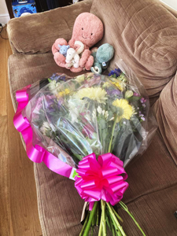They are beutiful xxxx
Need to find some vases
Are you ok? I am still in Starbucks. Will leave at about 4pm.
Fine
Hi. I am in the hospital already, shall I come up do you think? Xx
Yes
That was superb! My second sandwich, a few hula hoops, the yogurt followed by a Lindour chocolate. I'm in bed feeling very content..... and full
I could not have hoped for a much better birthday meal. It is incredible how good normal food tastes after three weeks of hospital food
Just got in… I am so pleased. It was brilliant to see you.
Hopefully not long now. Xx
There is a Soccer Special.
I know, thanks. Just put it on
Thank you - they are beautiful
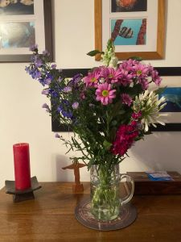There is a lot of them xxx
Birthday and anniversary meal
Going well for you. X
We've started well!
I think Piroe could be off in the summer
Oh dear
Jane is trying to ring you
No she isn’t
Just had my first oral antibiotic and had my cannula removed. Nurse reckons tomorrow.
Neither phone is ringing.
👍👍👍👍
Jane said she was. I had to cut the call short due to antibiotic and nebuliser
Just tried to call her. No reply.
No idea what is happening
Will try and call her back in 10 mins when this is finished. I got all over excited when I saw the tablet!!!!
Which was just after she called me
Did you speak to Jane?
Yes. Through all of half time when I was going to call you.
Well …. a good moment for me, at about exactly the same time as you conceded
Are you there?
Are you ok?
What’s happened?
Night night. Love you!
Love you too. Xx
27th April
Good morning
Good morning. On nebuliser until 6:50. Will call you then. Wordle in four.
👍
Had second tablet. No fever yet
Good. Xx
Lucky
Wordle 312 3/6*
⬜🟩⬜⬜⬜
🟩🟩⬜⬜⬜
🟩🟩🟩🟩🟩
Wordle 312 4/6*
⬜⬜⬜⬜🟨
🟩⬜⬜⬜⬜
🟩⬜🟩⬜🟩
🟩🟩🟩🟩🟩
You have to laugh😂😂xx
Indeed
Bertie says he hopes we don't get let out before 11:00 as that is tea and bunny time.
I am sure that won’t be a problem.
World cup application looks good. Are you going to update three sheets with all our bookings?
I am not sure that is entirely necessary. 🤔
First morning since I have been here that they have not offered to change my sheets. I got a clean towel but no sheets!
That sounds positive. Do you like dried apricots (they are high in iron)?
Which nuts do you like as they are also good for iron.
I don't think I have ever had an apricot, died out otherwise. Happy to give them a go.
I used to eat bags of mixed nuts but I can't think of any that I do not like. Can I just eat the ferero rocher or whatever they are called
dried or otherwise
Slightly disappointing but it is a definite tomorrow morning. 24 more hours. They are going to start getting my discharge papers ready and will give me the full month's worth of antibiotics (so no waiting around)
Bertie says it's time for tea and bunny.
Hi. Just tried to call. Call me when you can. Xx
Are you ok? Disappointed about today, but I would rather them do all the checks than you be discharged and then get worse again at home.
I'm fine. Just had an apple and blackberry crumble with ice cream which was one of the best things they have given me to eat since I got here
How are you?
Just got in and a couple of slices of toast.
As I couldn’t come and pick you up I decided to do Pilates and go for a swim after the weights class.
Any more updates?
Sorry, doesn’t make sense… And have HAD a couple of slices of toast.
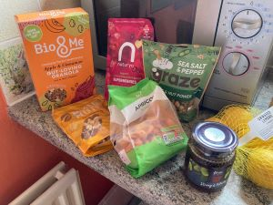My rather unusual grocery shopping earlier...
Looks lovely!
Nothing happening yet re tea or nebuliser. Don't panic if call a bit late!
No worries… perhaps they think you have come home.
Unbelievably quiet here today. It seems everyone else has gone home.
Yes has arrived
Tea
👍
Nothing too exciting happening still although I have been promised another cup of tea
Lovely. X
I have my doubts as to whether or not it will arrive while I am still awake but we shall see
Night night sleep tight. I love you. Xx
Night night. No tea! Love you!
28th April
Good Morning. How are you? X
Quite upset. Failed to do wordle again.
Oh dear. But apart from that??!
Fine
Bertie?
He's getting ready to come home
Wordle 313 4/6*
⬜⬜🟨⬜🟨
🟨⬜⬜⬜🟨
⬜🟩🟨⬜⬜
🟩🟩🟩🟩🟩
Wordle 313 X/6*
⬜⬜🟨🟨🟨
⬜⬜🟨🟨🟨
🟨🟨🟨⬜🟨
⬜🟩🟩🟩🟩
⬜🟩🟩🟩🟩
⬜🟩🟩🟩🟩
What were they all?
Testy, Pesty and Festy. All real words apparently. Should have gone for Zesty
I didn’t know any of them were real words. I had thought of Festy
I am outside the ward.